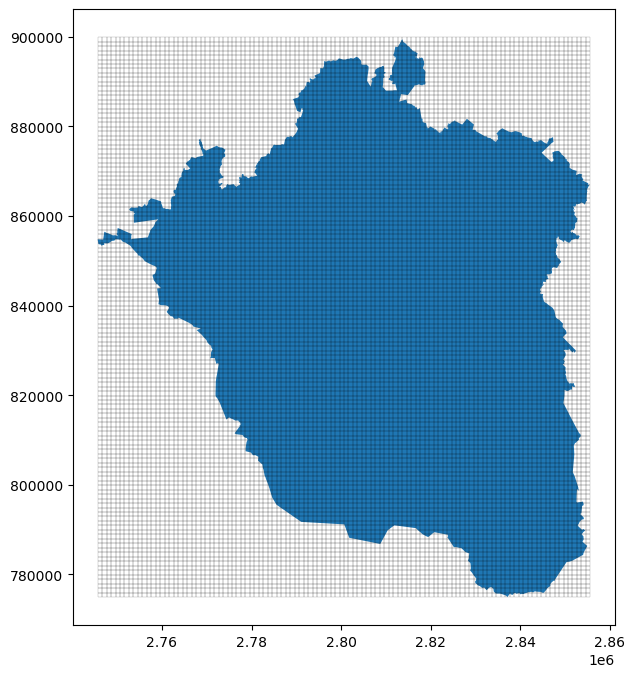
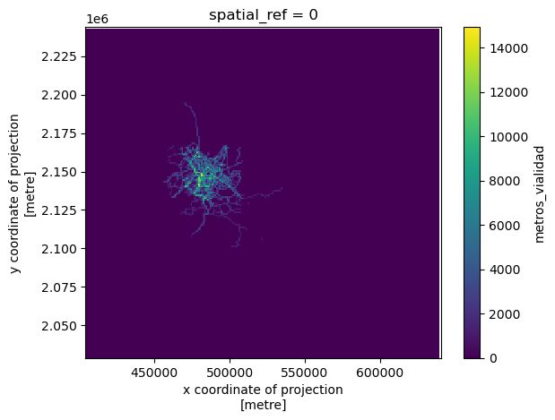

pyLandUseMX
El uso de suelo es un insumo básico para diferentes investigaciones en el contexto urbano: criminología, movilidad y diseño urbano, por ejemplo, son campos en los que contar con información sobre el uso real del suelo resulta fundamental para realizar investigaciones cuantitativas. Esta librería busca ofrecer diferentes opciones para construir variables e índices para caracterizar el uso de suelo real, es decir el uso observado, en el contexto de las ciudades mexicanas.
Además de mediciones sobre uso de suelo, la librería provee métodos para extraer variables de estructura urbana como mezcla e intensidad de uso de suelo. También implementa algunas herramientas básicas de análisis para extraer patrones y relaciones en diferentes escalas.
La librería aprovecha diferentes fuentes de datos públicas como el DENUE y el Censo para estimar variables de uso de suelo y su cambio en el tiempo. Provee métodos para definir tipos de uso de suelo y agregarlo en diferentes unidades espaciales: mallas regulares, hexágonos y polígonos arbitrarios (como colonias o AGEBS).
Instalación
Por lo pronto, la manera más fácil de instalar la librería es usando pip para instalar desde el repositorio. Antes es necesario asegurarse de que las dependencias del sistema están instaladas:
gdalrtreelibgeosproj
En sistemas basados en apt:
sudo apt-get install -y gdal-bin python3-gdal python3-rtree libspatialindex-dev libgeos-dev libproj-devYa con las dependencias instaladas:
pip install git+https://github.com/CentroGeo/pyLandUseMXEstructura
La librería está organizada en torno a dos conceptos básicos: Cobertura y UsoDeSuelo. Las Coberturas son formas de cubrir un área de estudio (una zona metropolitana, por ejemplo) utilizando mallas regulares (cuadrados o hexágonos) o polígonos de forma arbitraria (colonias o AGEBS, por ejemplo). Estas coberturas definen la forma en la que vamos a agregar variables para estudiar el uso de suelo y proveen los métodos para estas agregaciones. El UsoDeSuelo integra una cobertura y una definición de las variables en torno a categorías definidas por el usuario, a partir de esta integración, la clase UsoDeSuelo provee diferentes herramientas para construir diferentes índices y variables a partir de los datos integrados en las coberturas. El módulo análisis provee métodos para analizar el uso de suelo.
Además de estos elemementos, la librería también contiene un módulo de descargas que permite descargar datos ya procesados que sirven como ejemplo para realizar diferentes tipos de análisis.
Módulos
Descargas
El módulo de descargas, provee funciones para descargar de nuestros repositorios algunas capas que contienen variables relevantes para la extracción y análisis de uso de suelo en México.
Las funciónes admiten un path en donde descargar los datos. La documentación completa la encuentras en API/descargas
Red de transporte
Tenemos disponible para descargar un recorte de la red de transporte obtenida de OpenStreetMap para la región central del país (la Zona Metropolitana del Valle de México).

Polígonos del Sistema Urbano Nacional
También tenemos disponibles para descarga los polígonos de las ciudades del Sistema Urbano Nacional (SUN) del 2018. Estos representan los límites de las principales aglomeraciones urbanas del país.
Colonias CDMX
Tenemos una base de colonias para la CDMX basadas en la que se publica en Datos Abiertos CDMX con algunas correcciones topológicas.
DENUE
Tenemos una base del DENUE integrada para el año 2022 en la Ciudad de México.
Uso de Suelo
El módulo usodesuelo provee métodos para extraer variables de Uso de Suelo y medio construido en diferentes soportes espaciales. Además nos permite calcular algunos índices básicos como mezclas e intensidad.
Soporte
Regularmente para trabajos sobre análisis de uso de suelo y cobertura urbana se parte de la integración de la información en algún soporte espacial. La clase Soporte provee métodos para estructurar las fuentes de datos en dos grandes tipos de soporte:
- Mallas regulares
- Polígonos arbitrarios


Los soportes nos permiten agregar diferentes tipos de variables en mallas regulares (por ejemplo, a la izquierda la red de calles agregada en un raster) o en polígonos arbitrarios (a la derecha muestra de comercios agregados en colonias)


UsoDeSuelo
La clase UsoDeSuelo parte de un soporte espacial y nos permite calcular algunos indicadores sobre el uso de suelo y el medio construido.
DENUE
Este módulo provee funcionalidades para trabajar con datos del Directorio Nacional de Unidades Económicas y obtener algunas variables de uso de suelo. La clase Denue permite seleccionar actividades económicas por clave SCIAN o agregar estas actividades en categorías usando expresiones regulares.
En el módulo descargas se puede obtener una base para la Ciudad de México con el Denue 2022. La estructura de esa base sirve como ejemplo para utilizar otras bases del Denue con la librería